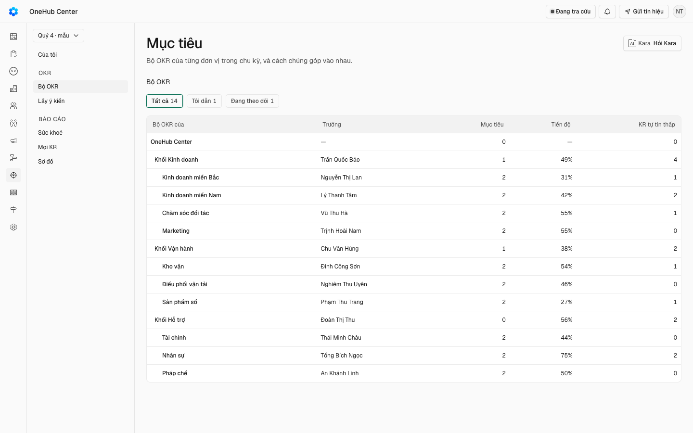

Ô chọn đơn vị trên một màn chung thay cho trang riêng của từng bộ; cách xem và chip lọc trông giống hệt nhau. Mỗi bộ OKR một trang, như Plan của Tability.
docs/superpowers/specs/2026-10-21-trang-bo-okr-design.md
| Eval | Tiêu chí | Loại | Verdict | run_id | verified_at |
|---|---|---|---|---|---|
| E1 | AC-1 | test | PASS | minted-trang-bo-okr-E1-r4 | 2026-10-23T10:36:08Z |
| E2 | AC-1 | script | PASS | minted-trang-bo-okr-E2-r4 | 2026-10-23T10:36:08Z |
| E3 | AC-2 | test | PASS | minted-trang-bo-okr-E3-r4 | 2026-10-23T10:36:08Z |
| E4 | AC-2 | script | PASS | minted-trang-bo-okr-E4-r4 | 2026-10-23T10:36:08Z |
| E5 | AC-3 | script | PASS | minted-trang-bo-okr-E5-r4 | 2026-10-23T10:36:08Z |
| E6 | AC-4 | test | PASS | minted-trang-bo-okr-E6-r4 | 2026-10-23T10:36:08Z |
| E7 | AC-5 | script | PASS | minted-trang-bo-okr-E7-r4 | 2026-10-23T10:36:08Z |
| E8 | AC-6 | test | PASS | minted-trang-bo-okr-E8-r4 | 2026-10-23T10:36:08Z |
| E9 | AC-6 | script | PASS | minted-trang-bo-okr-E9-r4 | 2026-10-23T10:36:08Z |
| E10 | AC-7 | script | PASS | minted-trang-bo-okr-E10-r4 | 2026-10-23T10:36:08Z |
| E11 | AC-7 | test | PASS | minted-trang-bo-okr-E11-r4 | 2026-10-23T10:36:08Z |
| E12 | AC-8 | script | PASS | minted-trang-bo-okr-E12-r4 | 2026-10-23T10:36:08Z |
| E13 | AC-9 | test | PASS | minted-trang-bo-okr-E13-r4 | 2026-10-23T10:36:08Z |
| E14 | AC-10 | ui-check | PASS | s4-r4-e14 | 2026-10-23T10:36:08Z |
| E15 | AC-11 | script | PASS | minted-trang-bo-okr-E15-r4 | 2026-10-23T10:36:08Z |
| E16 | AC-6 | test | PASS | minted-trang-bo-okr-E16-r4 | 2026-10-23T10:36:08Z |
| E17 | AC-11 | script | PASS | minted-trang-bo-okr-E17-r4 | 2026-10-23T10:36:08Z |
| E18 | AC-11 | script | PASS | minted-trang-bo-okr-E18-r4 | 2026-10-23T10:36:08Z |
AC-1: Given trưởng một phòng ban trong bộ mẫu, chu kỳ đang chạy, When bấm mục «Bộ OKR» trên thanh bên khu Mục
cmd: bun run test -- "cd apps/api && bun test test/okr-danh-sach-bo.spec.ts -t tbo-hang" test-run: dropped crm_mvku4fk6zjry_test lệnh kết thúc mã 0
AC-1: Given trưởng một phòng ban trong bộ mẫu, chu kỳ đang chạy, When bấm mục «Bộ OKR» trên thanh bên khu Mục
cmd: EVAL=${EVAL:-} bun scripts/lan-do/tien-de.mjs --chay "bun _acceptance/trang-bo-okr/rang/man-bo-okr.mjs"
phien-do: xong — mã 0
AC-2: Given trang danh sách, When người xem chọn Tôi dẫn rồi Đang theo dõi, Then danh sách chỉ còn đúng các bộ
cmd: bun run test -- "cd apps/api && bun test test/okr-danh-sach-bo.spec.ts -t tbo-co" test-run: dropped crm_mvku4hihcwvd_test lệnh kết thúc mã 0
AC-2: Given trang danh sách, When người xem chọn Tôi dẫn rồi Đang theo dõi, Then danh sách chỉ còn đúng các bộ
cmd: EVAL=${EVAL:-} bun scripts/lan-do/tien-de.mjs --chay "bun _acceptance/trang-bo-okr/rang/man-bo-okr.mjs"
phien-do: xong — mã 0
AC-3: Given trang danh sách, When người xem bấm tên một bộ, Then trình duyệt mở `/okr/bo-okr?donOkr=<đơn vị>` kèm
cmd: EVAL=${EVAL:-} bun scripts/lan-do/tien-de.mjs --chay "bun _acceptance/trang-bo-okr/rang/man-bo-okr.mjs"
phien-do: xong — mã 0
AC-4: Given trang một bộ ở chu kỳ đang chạy, When trang tải xong, Then ngay dưới đầu trang có hàng thẻ con OKR ·
cmd: cd apps/app && TZ=Asia/Ho_Chi_Minh bun test --timeout 10000 --preload ../../packages/ui/test/setup-dom.ts ./test/trang-bo-okr.dom.tsx -t tbo-the Ran 7 tests across 1 file. [1399.00ms] lệnh kết thúc mã 0
AC-5: Given trang một bộ của một phòng ban ở một chu kỳ không phải chu kỳ hiện tại, When người xem bấm lần lượt
cmd: EVAL=${EVAL:-} bun scripts/lan-do/tien-de.mjs --chay "bun _acceptance/trang-bo-okr/rang/man-bo-okr.mjs"
phien-do: xong — mã 0
AC-6: Given một bộ có KR gắn việc trong bộ mẫu, When mở thẻ Việc, Then trang liệt kê đúng các việc gắn KR của các
cmd: bun run test -- "cd apps/api && bun test test/okr-danh-sach-bo.spec.ts -t tbo-viec" test-run: dropped crm_mvku4h99p7j7_test lệnh kết thúc mã 0
AC-6: Given một bộ có KR gắn việc trong bộ mẫu, When mở thẻ Việc, Then trang liệt kê đúng các việc gắn KR của các
cmd: EVAL=${EVAL:-} bun scripts/lan-do/tien-de.mjs --chay "bun _acceptance/trang-bo-okr/rang/man-bo-okr.mjs"
phien-do: xong — mã 0
AC-7: Given các liên kết cũ, When mở `/okr/theo-don-vi?donOkr=pb:<id>&xemOkr=hop-tuan&kyOkr=<id>` và
cmd: EVAL=${EVAL:-} bun scripts/lan-do/tien-de.mjs --chay "bun _acceptance/trang-bo-okr/rang/man-bo-okr.mjs"
phien-do: xong — mã 0
AC-7: Given các liên kết cũ, When mở `/okr/theo-don-vi?donOkr=pb:<id>&xemOkr=hop-tuan&kyOkr=<id>` và
cmd: cd apps/app && TZ=Asia/Ho_Chi_Minh bun test --timeout 10000 --preload ../../packages/ui/test/setup-dom.ts ./test/trang-bo-okr.dom.tsx -t tbo-lien-ket Ran 16 tests across 1 file. [1213.00ms] lệnh kết thúc mã 0
AC-8: Given khổ 375×812, When mở trang danh sách và trang một bộ, Then danh sách các bộ hiện thành danh sách mục
cmd: EVAL=${EVAL:-} bun scripts/lan-do/tien-de.mjs --chay "bun _acceptance/trang-bo-okr/rang/man-bo-okr.mjs"
phien-do: xong — mã 0
AC-9: Given trang danh sách, When dữ liệu đang tải và khi thủ tục `okr.danhSachBo` lỗi, Then lúc tải hiện khung
cmd: cd apps/app && TZ=Asia/Ho_Chi_Minh bun test --timeout 10000 --preload ../../packages/ui/test/setup-dom.ts ./test/trang-bo-okr.dom.tsx -t tbo-tai Ran 3 tests across 1 file. [930.00ms] lệnh kết thúc mã 0
AC-10: Given trang danh sách và trang một bộ ở chế độ sáng và tối, When người ký nhìn ảnh 1440 và 375, Then bố cục

10. Tương phản sáng/tối: phóng to vùng vết/thẻ/chip lọc, chữ và viền đều đọc được, không chìm nền; thẻ không mở màu xám nhạt nhưng rõ: PASS. Network: không có công cụ đọc network (driver là script chụp) → n-a (driver). Server do tien-de.mjs tự dựng và tự dọn.
AC-11: Given vòng này đã làm, When chạy eval máy của các hồ sơ đã ký có thước chạm `/okr/bo-okr`, `theo-don-vi`
cmd: bun _acceptance/trang-bo-okr/rang/khong-doi-hinh.mjs --phan 1/3 KET LUAN khong-doi-hinh: dat
AC-6: Given một bộ có KR gắn việc trong bộ mẫu, When mở thẻ Việc, Then trang liệt kê đúng các việc gắn KR của các
cmd: cd apps/app && TZ=Asia/Ho_Chi_Minh bun test --timeout 10000 --preload ../../packages/ui/test/setup-dom.ts ./test/trang-bo-okr.dom.tsx -t tbo-viec-ten Ran 2 tests across 1 file. [1194.00ms] lệnh kết thúc mã 0
AC-11: Given vòng này đã làm, When chạy eval máy của các hồ sơ đã ký có thước chạm `/okr/bo-okr`, `theo-don-vi`
cmd: bun _acceptance/trang-bo-okr/rang/khong-doi-hinh.mjs --phan 2/3 KET LUAN khong-doi-hinh: dat
AC-11: Given vòng này đã làm, When chạy eval máy của các hồ sơ đã ký có thước chạm `/okr/bo-okr`, `theo-don-vi`
cmd: bun _acceptance/trang-bo-okr/rang/khong-doi-hinh.mjs --phan 3/3 KET LUAN khong-doi-hinh: dat
chưa gộp vào onehub (nhánh production kho khai)